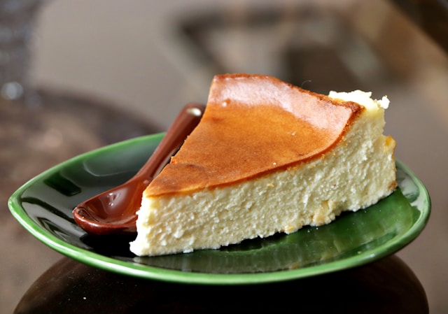
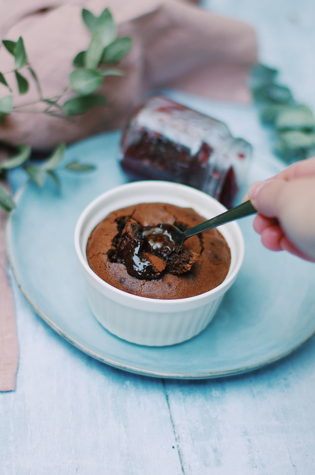

Orman Meyveli Browni
Browni, 19. yüzyılın sonlarında Amerika Birleşik Devletleri'nde ortaya çıkan ve kısa sürede popülerlik kazanan bir tatlıdır.
İlk olarak 1893'te Chicago'daki Dünya Kolomb Sergisi'nde tanıtılan bu tatlı, çikolata ve tereyağının mükemmel birleşimiyle tanınır.
Orman Meyveli Browni ise, klasik browni tarifine modern bir dokunuş getirir.
Taze orman meyvelerinin eklenmesiyle zenginleştirilen bu versiyon, tatlıya hem görsel hem de tat açısından yeni bir boyut kazandırır.
Orman meyvelerinin doğal asiditesi ve renkli görünümü, browniye taze ve lezzetli bir varyasyon sunar.
San Sebastian Cheesecake
San Sebastian Cheesecake, İspanyol mutfağının modern klasiklerinden biridir ve ilk olarak 1990'larda San Sebastián, İspanya'daki bir restoranda popülerlik kazandı.
Bu cheesecake, geleneksel New York cheesecake'lerinin aksine, üzerine yanmış karamelize bir yüzeyle karakterizedir.
San Sebastian Cheesecake'in özelliği, dışının koyu kahverengi, içinin ise kremsi ve pürüzsüz bir dokuda olmasıdır.
Tarif, şeflerin yaratıcılığı ve modern mutfak trendleriyle gelişmiş, klasik cheesecake'lere taze bir bakış açısı getirmiştir.
Bu tatlı, zengin ve hafif yakılmış karamel tadıyla, cheesecake severler için unutulmaz bir deneyim sunar.
Creme Brulee
Creme Brulee, Fransız mutfağının en ünlü tatlılarından biri olarak kabul edilir ve kökenleri 17. yüzyıla kadar uzanır.
Bu tatlı, zengin ve kremsi bir vanilya muhallebi tabanına sahip olup, üst kısmında ince bir karamelize şeker tabakası ile karakterizedir.
Creme Brulee'nin özelliği, şekerin bir mutfak feneri ile yakılarak karamelize edilmesidir, bu da tatlıya eşsiz bir dokusu ve tat profili kazandırır.
Tarif, Fransız mutfağının zarif ve basit malzemelerle harika sonuçlar elde etme felsefesini yansıtır.
Creme Brulee, tatlı severler için hem görsel hem de damak tadına hitap eden, klasik bir Fransız tatlısıdır.

Sufle
Sufle, kökenleri 18. yüzyıla dayanan ve Fransız mutfağının en zarif tatlılarından biri olarak bilinir.
Bu tatlı, hafif ve kabarık bir dokuda, genellikle çikolata veya vanilya gibi tatlarla hazırlanan bir karışımdan oluşur.
Sufle'nin özelliği, pişirme sırasında kabaran ve hafifçe altın rengini alan üst kısmıdır; bu özellik tatlının özellikle dikkat çeken bir yönüdür.
Yapımı sırasında doğru sıcaklık ve zamanlamaya dikkat edilmesi gerekir, çünkü sufle'nin içinin akışkan kalması ve dışının mükemmel şekilde kabarması bu faktörlere bağlıdır.
Sonuç olarak, sufle hem görsel hem de tat olarak etkileyici bir tatlı olup, mutfakta ustalık gerektiren bir deneyim sunar.
